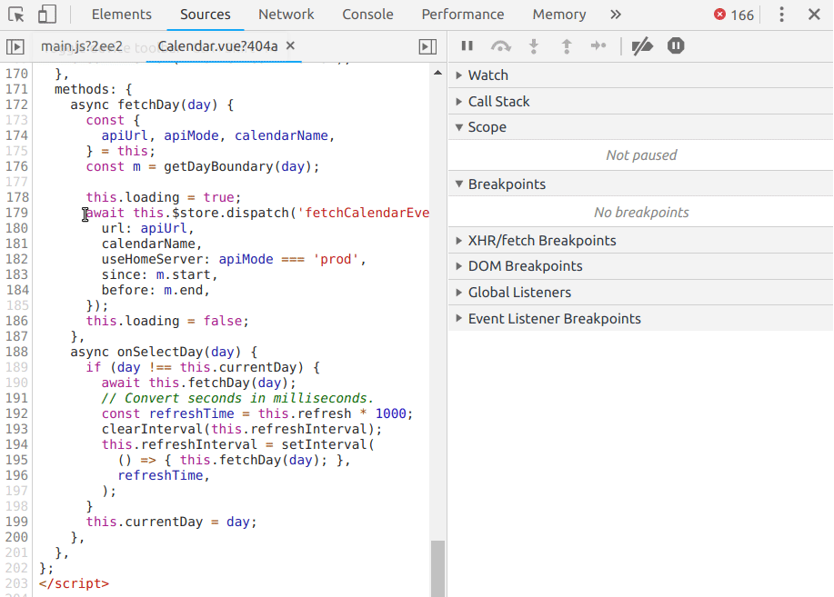
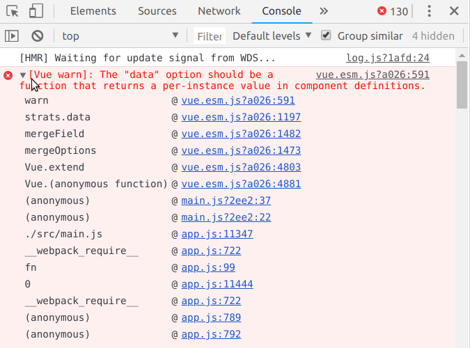

Gold sponsors


- The most stressed person in the room
- First time speaker
Blazej Owczarczyk @os_blazey
- Workingn with Drupal, React and Vue.js
- Working on fully and progressively decoupled projects
PHP & Javascript Developer Amazee Labs Zurich
Progressive decoupling
The why
- Do whatever needs to be done
Fully decoupled
POWER
- Do whatever needs to be done
No compromises
- Best possible performance
Performance
- Stellar user experinces
UX
with great power comes great
- Easy tasks become complex
RESPONSIBILITY
- Extremly potent
- Secure
- Pluggable
- States system
- Ajax system
- Well defined validation - submission flow
- Validation out of the box
- Huge component libray, eg. text, email, number, file, entity reference
- There are no js tools that can be compared to FAPI.
- Validation and submission need to be implemented from scratch.
- All the forms need to be built from scratch, even those that drupal handles well.
- The more entity references the harder the implementation is.
- Views are so good.
- We are so used to them that we may underestimate the underlying complexity.
- We're used to the fact that a table listing with paging, exposed filters, click sorting and bulk operations takes a few dozen clicks.
- Implement the table template from scratch.
- Add markup for the exposed filters form.
- Then fetch the initial data with the number of pages and allowed values for exposed filters.
- Implement a pager.
- Implement the url parsing logic to get the current page and values for exposed filters.
- Check which colums are sortable, turn then into links and pass the sort order to the query.
- Ok when the frontend and the backend share top parts of the domain.
- No untrusted apps should share it.
- If not - OAuth.
- Simple OAuth works fine.
- Hard to implement securely on frontend (SSR, refreshing tokens).
Authentication
- Drupal spoils us.
- Once we learn the abstractions we become extremly efficient.
- Lost when going fully decoupled.
- Sometimes there are no alternatives, eg. mobile apps.
- However, for web projects we can use...
Progressive decoupling
- Front end frameworks are really easy and intuitive when building components.
the
best
of both worlds
- Login
- Content editing
- Existing functionalities
- Many possibilities.
- Few examples
- Front end frameworks are really easy and intuitive when building components.
use
cases
- decreases page load time (drastically)
- improves perceived performance
- reduce webserver's network traffic
- decoupling makes it easy to test
- don't even use oAuth
- requires CORS
- easy to integrate
- swap one page or block without touching the rest of the site
The how
- the easiest way to decouple for drupalers
- use graphql to fetch data
- render in twig
no js
easy setup
enable graphql_twig
Javascript
Modern JS
- ECMAScript 2015
- revolutionary changes
ES6
Deconstructing assignment
const { width, height, depth } = product.dimensions
Property shorthand
const person = { firstName, lastName }
Spread syntax
const order = { ...customer, ...address }
- js finally joined the family of laguages supporting default parameters
Default parameter values
const getProperty = function (object, property = 'value') {
return object[property]
}
- not only syntax
- inherits this from the parent scope
Arrow functions
const getArea = (dims) => dims.width * dims.height
... with lexical this
this.cartItems.forEach(item => {
this.total += item.cost
})
Classes
class Rectangle extends Shape {
constructor (id, x, y, width, height) {
super(id, x, y)
this.width = width
this.height = height
}
}
class Circle extends Shape {
constructor (id, x, y, radius) {
super(id, x, y)
this.radius = radius
}
};
// Example from http://es6-features.org
- Multiline
- inherits this from the parent scope
Template literals
const greeting = `Hi ${firstName} ${lastName}`
- ECMAScript 2016
- not very revolutionary
- the exponentiation operator **
- Array.prototype.includes
ES7
- ECMAScript 2017
- just one feature, but a powerful one
ES8
- The evolution of async code
ES5 - callbacks
$.ajax({
url: 'https://swapi.co/api/people/1',
success: function (person) {
$.ajax({
url: person.homeworld,
success: function (planet) {
setHomeworld(person, planet)
},
);
},
);
ES6 - promises
fetch('https://swapi.co/api/people/1')
.then(response => response.json())
.then((person) => {
fetch(person.homeworld)
.then(response => response.json())
.then((planet) => {
setHomeworld(person, planet)
})
});
- No callback hell
- No nesting
- Looks like sync code
- Readable
- Implemented using generators
ES8 - async/await
const personResponse = await fetch('https://swapi.co/api/people/1')
const person = await personResponse.json()
const planetResponse = await fetch(person.homeworld)
const planet = await planetResponse.json()
setHomeworld(person, planet)
Embedding
JS
modernization
- It was designed for drupal core
- It was designed for drupal core
- It was designed for drupal core
Patch
- use package.json from core
- postponed because of a bug in babel-cli
- may work (it did at some point)
Use core ES6 transpilation
yarn watch:js-dev --dir ../modules/custom # local development
yarn build:js --dir ../modules/custom # optimized build
to
commit
or not to
commit
- Users shouldn't need to set up a bundler
- Commit both .es6.js and .js
- You can use es6 in your contrib module now!
- Artifacts should never be commited
- Output should be minified
- Conflict in minified code are impossible to sort out
- It might be fine in a single-developer set up
- Build at deploy time instead
RUN yarn install --pure-lockfile && yarn build:js
- Transpilation is not a silver bullet
- Adding npm packages is tedious
- It needs to be easy if we want people to start contributing
npm dependencies?
- Official starterkits for both react and vue are based on it
- Add any npm package with yarn add
recipe for
Vuejs
- requires vue-cli
- vue is just a folder name
Initialize a vue project
cd my_module
vue create vue
Define a dynamic library
function hook_library_info_build()
- add the bundle from webpack dev server to drupal
- drupal becomes a webpack dev server
- page reloads when changes to the files are detected
Connect with webpack dev server
yarn serve # start dev server at port 8080
$library['js']['http://localhost:8080/app.js'] = [
'type' => 'external',
];
- it's best not to commit dist
- build for production in a deployment step
- include the files from dist in production environment
- the flow is similar in react
Build for prod
RUN yarn install --pure-lockfile && yarn build
file_scan_directory($dist_path, '/^.*\.js$/')
- possible thanks to the api first initiative
- read-only data
- ok for simple widgets
$library['dependencies'][] = 'core/drupalSettings';
- guided product selection
- redirects to a view with facets pre-set
- built in react
- zero-latency navigation
- this is what the users are expecting
- alternative to core REST and JSON API
- Reading and querying content entities out of the box
- Mutations need to be implemented
- Quite convenenient in general
- pre-configured package
Install apollo-boost
yarn add apollo-boost graphql
- No configuration needed
- /graphql is the default endpoint
Import it
import ApolloClient, { gql } from 'apollo-boost';
const client = new ApolloClient();
- Fetch everything you need in one simple query
- Picture is a separate entity
- Nesting level limited by memory limit
- Response format defined by the query
Have fun!
const query = gql`
query {
user: currentUserContext {
... on UserUser {
name
fieldLocation
picture: userPicture {
url
alt
title
}
}
}
}
`
const result = await client.query({ query })
const pictureUrl = result.data.user.picture.url
Debugging
Chrome debugger
- Sources panel is an IDE
Breakpoints

- Exclude framework files from stack traces
Blackboxing

- Component inspector with props and computed props
- Vuex panel with the current state tree, list of mutations and import / export
- Event panel with all the emitted vue events
Vue.js
devtools
- Component inspector
developer tools
- List of queries executed on the current page
- Run queries in an embedded GraphiQL
Apollo
developer tools
- How can we make it easier?
- Define a central package.json of npm packages, like composer.json
- Integrate webpack into the library system in core?
make it
easier?
- How can we make it easier?
- Define a central package.json of npm packages, like composer.json
- Integrate webpack into the library system in core?
Libraries API + webpack?
Question time
- If you have questions or just want to talk
- The link to slides is on my twitter
blazey
@os_blazey
Bonus time?
- Only if there is a reason for that
- eg. performance is critical and there is budget
- Unless it's a super easy, one-off task - use a bundler
- It would be cool to have a bundler in core
- For small, isolated components, it isn't
- It might be a good idea when components need to communicate or share data